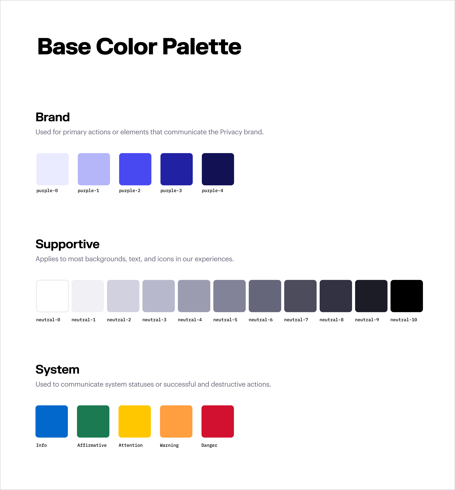
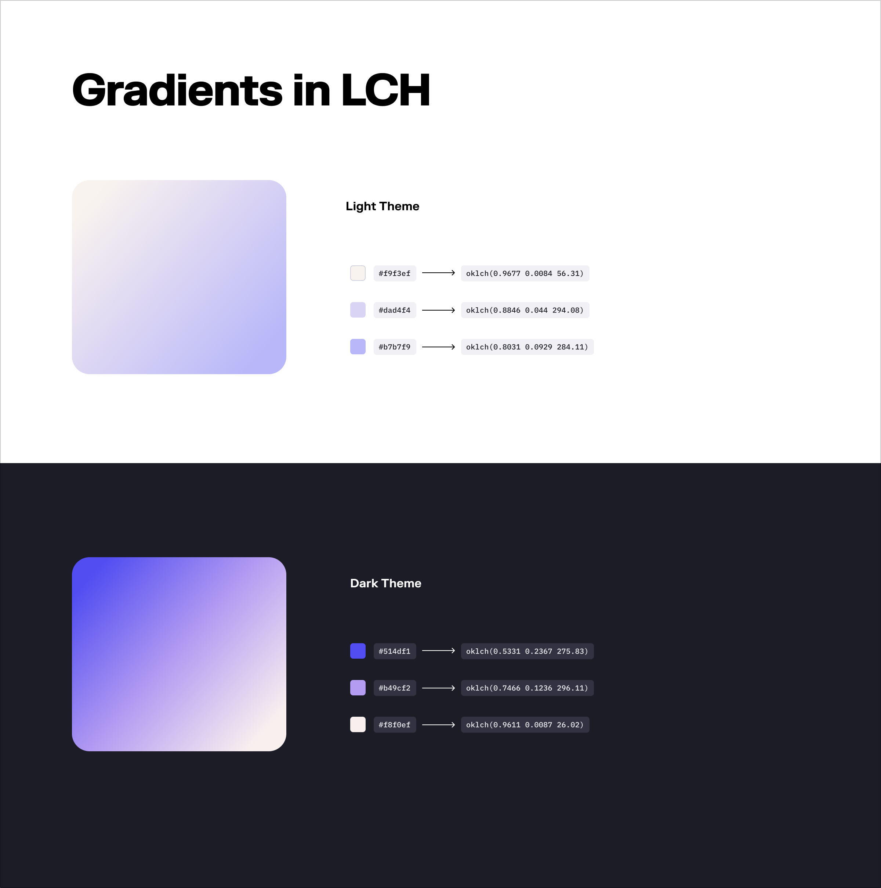
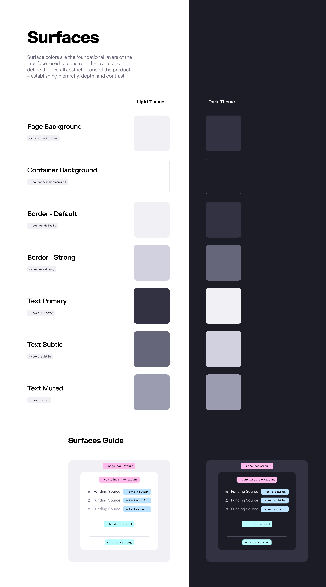
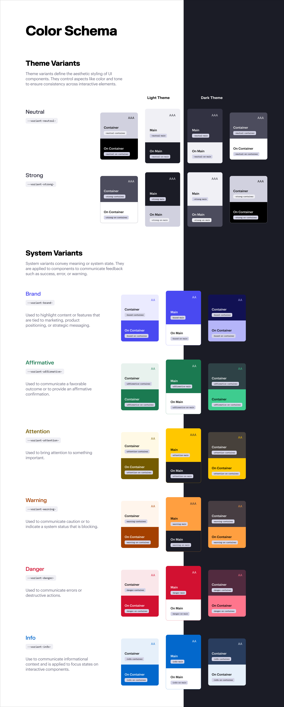

As our product matured, we needed a design system that could keep pace—one that not only supported light and dark themes, but also ensured consistent semantics and WCAG-compliant accessibility.
Our solution was a tokenized variant model built around predictable roles like main, onMain, container, and onContainer.



